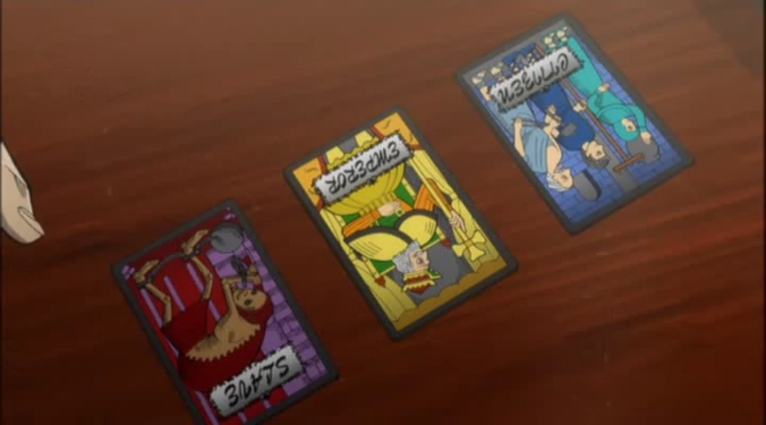

E-Card
E-Card（Eカード），顾名思义，是一种卡牌游戏。与限制剪刀石头布一样，它也包含心理策略，并且使用三种类型的卡牌。
这场赌博出现在《逆境无赖开司：生死游戏》（Gyakkyō Burai Kaiji: Death or Survival）的电子游戏中。
游戏玩法
这场赌博中使用了三种卡牌：
皇帝（koutei）
市民（shimin）
奴隶（dorei）
游戏旨在简化社会，这是百地谷和孝在游戏开始前所提到的。
皇帝拥有给予金钱的终极权力（即最强大的卡牌）。市民不能违抗他，因为他们想要金钱（即市民输给皇帝）。奴隶没有什么可失去的，也没有金钱的需求；因此，奴隶可以打败皇帝（即奴隶输给市民卡牌但能赢过皇帝卡牌）。
游戏由一方持有四张市民卡牌和一张皇帝卡牌（皇帝方）。另一方持有四张市民卡牌和一张奴隶卡牌（奴隶方）。由于奴隶方赢得比赛要困难得多（因为奴隶卡牌只能打败皇帝卡牌），奴隶方的玩家可以获得五倍的奖金。每场比赛由12场比赛组成，每场比赛每位玩家各放下一张卡牌。
12场比赛分为四组，每组交替由哪位玩家是皇帝方。每组由3轮比赛组成。
在前三轮中，皇帝方首先出一张卡牌，然后是奴隶方。然后揭示每张卡牌并决定胜者。
如果结果是平局，那么这一轮将继续进行第二场游戏，已经出过的卡牌被移除。现在奴隶方将首先放置一张卡牌，然后是皇帝方。
如果这场游戏再次平局，那么这一轮将进入最后一场比赛——即使再次平局。在这里，皇帝方将首先放置一张卡牌。
一旦这一轮结束，所有出过的卡牌被收集，下一轮开始，现在奴隶方首先出牌（即使上一轮以奴隶方出牌结束）。如果这场游戏是平局，这一轮将继续下一场比赛，皇帝方首先出牌。
一旦第二轮结束，进行第三轮比赛，再次由皇帝方开始。
一旦这三轮比赛结束，第一组比赛结束。两位玩家现在交换他们的手牌，以便皇帝方现在是奴隶方，奴隶方现在是皇帝方。
再次，皇帝方在第一轮（也就是第四轮总体上）首先出牌。
在总共第六轮结束后（第二组的第三轮比赛结束后），再次交换双方。在总共第九轮结束后（第二组的第三轮比赛结束后）再次这样做。
一旦所有12轮比赛结束，就可以确定胜者。
返回